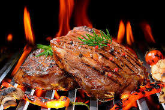

8.Coahuila

- Platillo: Carne asada estilo norteño
- Ingredientes: Cortes de res (arrachera, diezmillo), sal, cerveza, ajo, chile, tortillas.
- Historia: Nace del estilo de vida ganadero del norte, donde se aprovechan cortes al carbón.
- Dato curioso: Las carnes se curan o marinan con cerveza y se sirven con tortillas de harina.